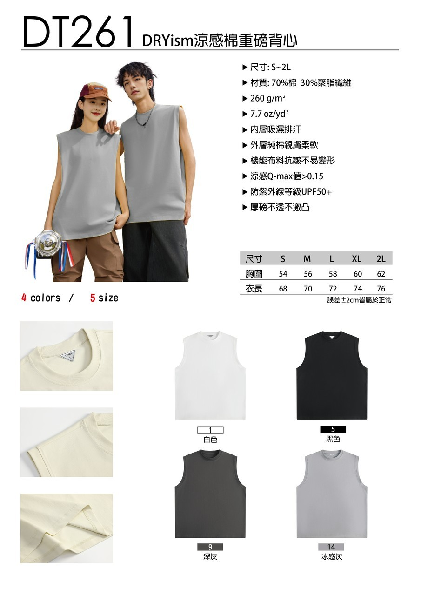

LAWLAWA / 07 COLORWAYS / 2026
Wear
the flow.
流動的符號，穿在身上的語言。LAWLAWA 無袖上衣，以七種色彩回應每一種日常狀態。
↓01 — Choose your frequency
7 colors.
One signal.
點選色票・左右滑動圖片・鍵盤方向鍵皆可切換
02 — Visual language
Symbols in motion.
正面以 LAWLAWA 字樣建立水平節奏，背面由上而下排列行船、嘎速、陶罐、瑪瑙與刺繡。五個圖案不只是符號，也各自承載來自土地與生活的色彩記憶。
⌁行船
◒嘎速
▧陶罐
◆瑪瑙
✳刺繡
行船 — 河水藍色 ／ 嘎速 — 大葉山欖綠 ／ 陶罐 — 陶罐黃 ／ 瑪瑙 — 瑪瑙紅 ／ 刺繡 — 十字繡紫
07COLORWAYS
02SIDES
01STATEMENT
03 — Fit & material
版型與
材質說明
選用 DT261 DRYism 涼感棉重磅背心版型，提供 S 至 2L 尺寸。材質、機能特性與各尺寸數據請參考右側完整說明圖。

DT261 / S—2L尺寸誤差 ±2cm 屬正常範圍
04 — Product notes
Built to
be seen.
設計配置
正面為 LAWLAWA 橫向字樣；背面由上至下排列行船、嘎速、陶罐、瑪瑙、刺繡五個圖案，分別對應河水藍色、大葉山欖綠、陶罐黃、瑪瑙紅與十字繡紫。展示圖同時呈現服裝正、背兩面。
配色選擇
紅、黃、紫、綠、白、藍與彩虹，共七種印花設定。
關於展示圖
頁面使用原始設計稿呈現；實際成衣顏色、布料紋理與印刷效果可能因製程與螢幕顯示略有差異。